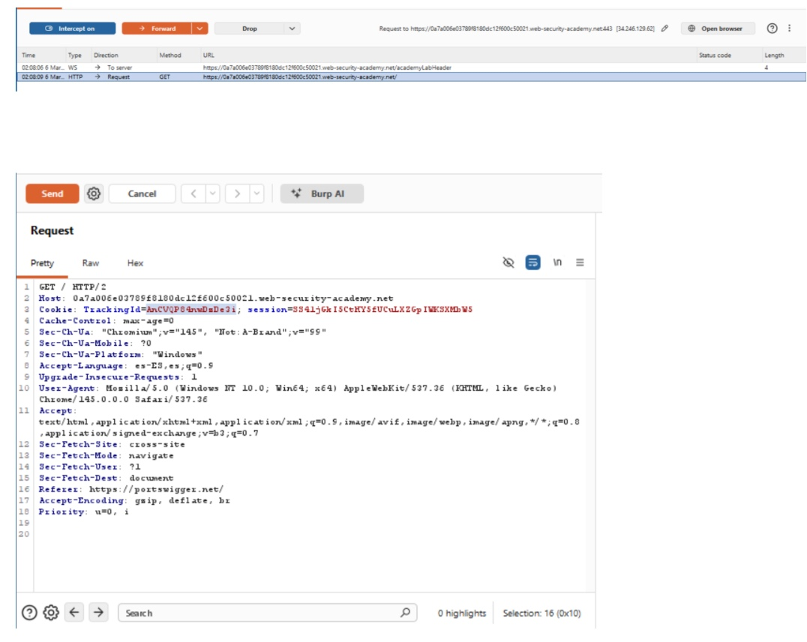
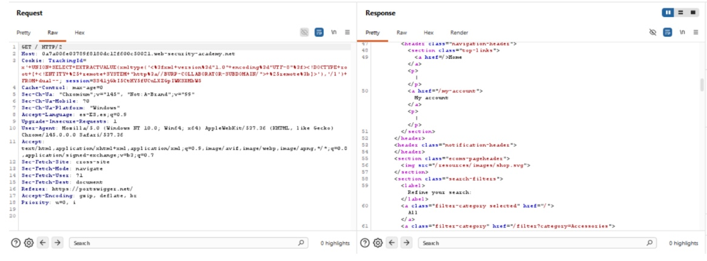

⚖️ Actividad 16 – Parcial 3
Dilemas éticos en Ciberseguridad
Descarga un respaldo académico de esta actividad.
1. Introducción
En un ecosistema digital donde el perímetro de seguridad es cada vez más difuso y las capacidades ofensivas evolucionan a un ritmo sin precedentes, la integridad del especialista en ciberseguridad se convierte en la última línea de defensa de una organización. No basta con el dominio técnico de herramientas de monitoreo o la ejecución impecable de un penetration test; el verdadero desafío radica en la gestión de situaciones donde los límites legales, organizacionales y morales convergen en zonas grises.
Este documento analiza de forma crítica tres escenarios: acceso no autorizado interno, vulnerabilidad crítica no reportada y uso de herramientas OSINT, evaluando la toma de decisiones bajo presión para garantizar que el ejercicio técnico sea también éticamente intachable y alineado con marcos normativos vigentes.
2. Marco Teórico
La fundamentación se asienta en la intersección de la ética aplicada y los estándares internacionales de seguridad de la información, como la familia de normas ISO/IEC 27001, que dictan que la protección de activos debe basarse en la gestión de riesgos y el cumplimiento legal.
Un pilar central son los "10 Mandamientos de la Ética Informática", creados en 1992 por el Computer Ethics Institute (CEI) bajo el Dr. Ramon C. Barquin. El análisis se enriquece con tres lentes filosóficos:
Ética Utilitarista
Busca el máximo beneficio técnico y social; una acción es correcta si genera el mayor bien para el mayor número de personas.
Enfoque de Derechos
Salvaguarda la privacidad del usuario final frente al poder del administrador de sistemas; ciertos derechos son inviolables.
Bien Común
Visualiza la ciberseguridad como un componente esencial de la estabilidad democrática y la confianza institucional.
La clasificación de conductas ilícitas distingue entre: delito informático (el software/hardware es víctima), delito asistido por computadora (el sistema como medio para fraude) y delito incidental (la tecnología facilita evidencia de un crimen tradicional).
3. Escenario 01 – Acceso no autorizado interno
1 El dilema ético
El conflicto radica en la colisión entre el deber de seguridad (detectar fugas) y el derecho a la privacidad (correos del director). El compañero justifica una acción intrusiva y no autorizada bajo una premisa de protección corporativa, planteando si el "fin justifica los medios" en un entorno donde no se siguieron los protocolos de auditoría formal.
2 Acción como especialista
Reportar el incidente de inmediato al CISO y a Recursos Humanos. Asegurar los logs de acceso para evitar alteraciones y abrir una cadena de custodia sobre la evidencia, ya que una investigación legítima debe estar precedida por una orden formal y, a menudo, la presencia de un representante legal o de cumplimiento.
3 Justificación desde marcos éticos
Ética Utilitarista
El acceso no autorizado genera más daño que beneficio. La pérdida de confianza en ciberseguridad y el riesgo legal superan cualquier hallazgo hipotético.
Enfoque de Derechos
Se viola el derecho fundamental a la privacidad de las comunicaciones. El deber del especialista es proteger estos derechos incluso frente a "aliados".
Bien Común
La integridad organizacional depende de que todos respeten las reglas. Permitir accesos por criterio propio rompe el orden institucional.
4 Mandamiento violado
5 Clasificación del delito
Delito InformáticoAcceso ilícito a sistemas de tratamiento de información, tipificado como vulneración a la confidencialidad de los datos.
4. Escenario 02 – Vulnerabilidad crítica no reportada
1 El dilema ético
El conflicto se presenta entre la integridad profesional y legal frente al beneficio económico personal. Existe la tentación de aprovechar un vacío administrativo (falta de firma de contrato) y una debilidad técnica para cometer un robo que teóricamente no dejaría rastro.
2 Acción como especialista
Documentar la vulnerabilidad de inmediato en un reporte preliminar y comunicarla al cliente con carácter de urgencia bajo un NDA, incluso sin contrato firmado. El valor profesional reside en encontrar fallos para corregirlos, no para explotarlos. La confianza del cliente es el activo más valioso en un pentest.
3 Justificación desde marcos éticos
Ética Utilitarista
El robo causaría perjuicio económico directo a usuarios y a la entidad. El beneficio de reportar (seguridad para miles) supera el beneficio individual de robar.
Enfoque de Derechos
La entidad financiera y sus clientes tienen derecho a la propiedad privada y a la seguridad de sus activos. Explotar la falla es una violación directa de estos derechos.
Bien Común
Un sistema financiero estable es un bien público. Al reportar la falla, se fortalece la infraestructura en la que confía la sociedad para sus transacciones diarias.
4 Mandamientos violados
5 Clasificación del delito
Delito InformáticoFraude informático o transferencia no consentida de activos, donde el sistema informático es el medio y el fin para la ejecución del delito.
5. Escenario 03 – Uso de herramientas OSINT
1 El dilema ético
El conflicto se presenta entre la obediencia jerárquica y el uso profesional de la información. Aunque se obtuvo de fuentes abiertas de manera legal, el dilema surge al decidir si es ético utilizar datos personales sensibles para realizar acoso o presión psicológica, alejándose de una investigación forense objetiva.
2 Acción como especialista
Negarse rotundamente a realizar la presión psicológica. Entregar un informe basado únicamente en hechos y evidencia relacionada con el fraude. Argumentar que el uso de tácticas de presión personal no solo es poco ético, sino que puede invalidar el proceso judicial posterior por coacción o acoso, dañando la legalidad de la investigación.
3 Justificación desde marcos éticos
Ética Utilitarista
Las tácticas de presión generan riesgo legal inmenso y pueden destruir la vida de personas inocentes (familiares del sospechoso) sin relación con el fraude.
Enfoque de Derechos
El sospechoso conserva el derecho a la dignidad y a que su familia no sea instrumentalizada como herramienta de extorsión, independientemente de su situación.
Bien Común
La justicia debe impartirse a través del debido proceso. Permitir que los investigadores actúen como extorsionadores degrada la confianza social en las instituciones.
4 Mandamiento aplicable
5 Clasificación del delito
Delito Asistido por ComputadoraEl uso de información obtenida mediante herramientas digitales para realizar una extorsión o acoso psicológico convierte a la tecnología en el facilitador de un delito de carácter personal y conductual.
6. Material multimedia
📹 Video: Ética en Ciberseguridad – Dilemas del profesional de seguridad
Video de referencia académica sobre ética profesional en ciberseguridad y toma de decisiones en situaciones de zona gris.
🖼️ Evidencia de la actividad


7. Conclusión
La resolución de esta actividad permite concluir que en el ámbito de la ciberseguridad, el conocimiento técnico es una herramienta de doble filo que exige una brújula moral robusta para evitar su abuso. A través del análisis de los escenarios de acceso no autorizado, vulnerabilidades no reportadas y el uso de técnicas OSINT, se hace evidente que el profesional de seguridad no solo debe ser un experto en la detección de amenazas, sino también un custodio de la ética organizacional.
El aprendizaje fundamental radica en que ninguna acción técnica ocurre en un vacío; cada decisión debe ser filtrada por los 10 Mandamientos de la Ética Informática y evaluada bajo enfoques como el utilitarismo y el bien común. En última instancia, la integridad de un sistema es tan fuerte como la integridad ética de quienes lo administran, reafirmando que la excelencia en ciberseguridad se alcanza cuando el rigor técnico y la responsabilidad moral convergen para proteger el ecosistema digital de manera justa y legal.
— Equipo 02 – Seguridad Informática, Primavera 2026.
8. Referencias
- Barquin, R. C. (1992). In pursuit of a "Ten Commandments" for Computer Ethics. Computer Ethics Institute.
- International Organization for Standardization. (2022). ISO/IEC 27001: Information security management systems.
- Joyanes Aguilar, L. (2014). Ciberseguridad: Estrategias de prevención, retos y ética digital. Alfaomega.
- National Institute of Standards and Technology. (2024). The NIST Cybersecurity Framework (CSF) 2.0. U.S. Department of Commerce.
- Sánchez, G., & Martínez, J. (2021). Ética para ingenieros en la era de la información. Revista Iberoamericana de Ciberseguridad.